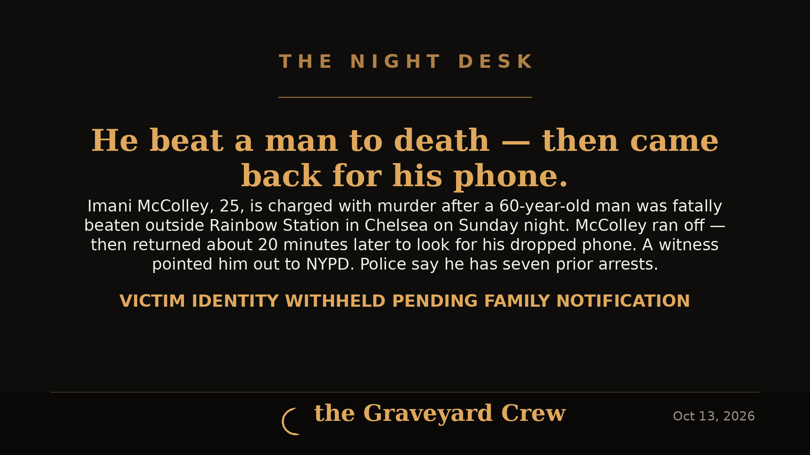

October 13, 2026 · 1 min read
He beat a man to death — then came back for his phone

Headline card by The Night Desk
What happened
Just after 9 p.m. Sunday, a 60-year-old man got into an argument with 25-year-old Imani McColley inside Rainbow Station, a store on 8th Avenue in Manhattan's Chelsea neighborhood. The dispute moved outside, where it turned physical, police say.
The older man was pushed to the ground, kicked and stomped, then taken to Bellevue Hospital, where he was pronounced dead.
McColley ran off. About 20 minutes later, he came back — to look for the cell phone he'd dropped at the scene. Officers were still working the area. A witness pointed him out, and he was arrested on the spot.
The charges
McColley was charged with murder and two counts of robbery early Monday, according to police sources. (FOX 5 NY noted at the time of its report that NYPD had not yet formally announced charges.)
Police say McColley has seven prior arrests, plus a number of sealed arrests. Records show he has three open cases — including a Bronx assault and weapons case he is due in court for Tuesday, a pending robbery case in Brooklyn, and a pending assault case in Manhattan. He has no indication of a hate crime motive in this case, NYPD said.
The victim's identity is being withheld pending family notification.
The detail everyone will talk about
An employee of the store told investigators McColley became angry after being denied access to a basement club inside the business. What turned the case from a street assault into a national headline was the 20-minute round trip: fleeing the scene, then walking back into an active crime scene to retrieve a dropped phone.
He was arraigned in Manhattan Criminal Court on Monday. Detectives say the investigation is ongoing.
Sources: FOX 5 NY, New York Daily News, ABC7 New York.
Source: FOX 5 NY — read the original report
← Back to latest stories